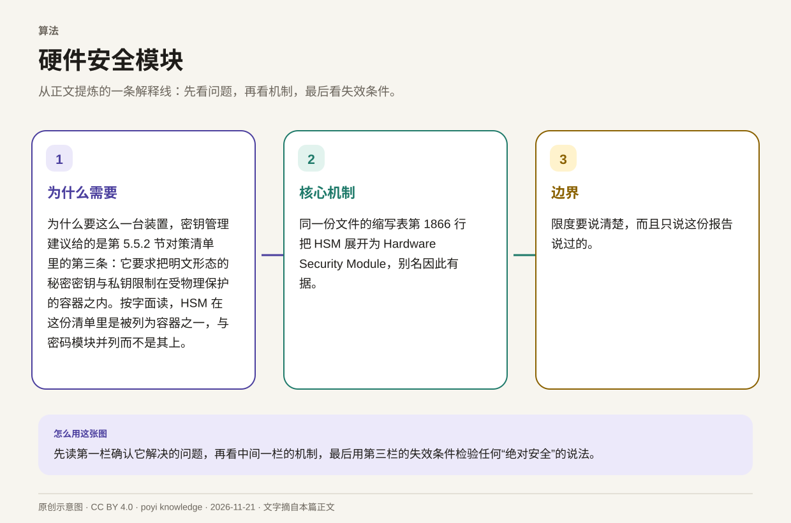
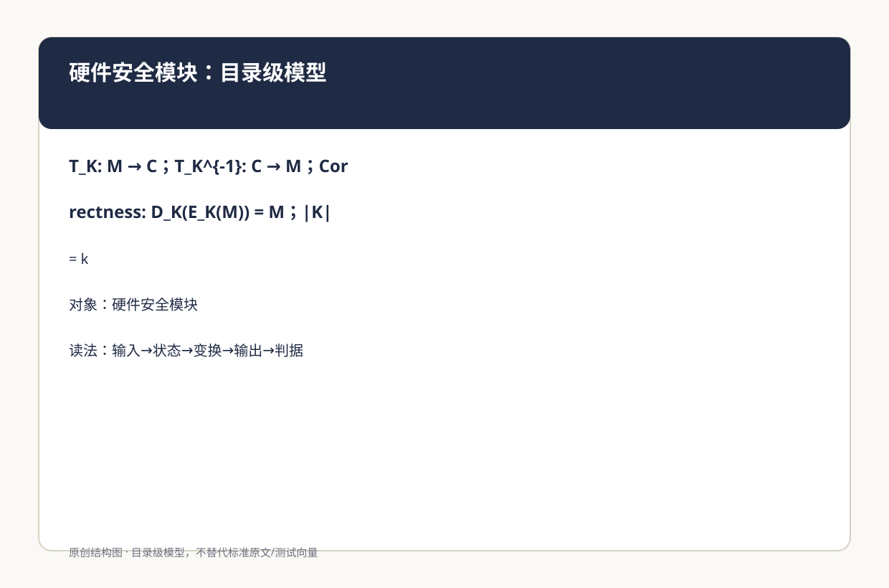

原理与机制
算法：硬件安全模块（Hardware Security Module）。定义句来自受控非密信息保护建议的讨论段：「Hardware security module (HSM) devices safeguard and manage cryptographic keys and provide cryptographic processing.」这一句把职责分成两半——既要管密钥，也要做运算；同一份文件的缩写表第 1866 行把 HSM 展开为 Hardware Security Module，别名因此有据。紧接着那句的前半段说明托管的是什么：「Cryptographic operations (e.g., encryption, decryption, and signature generation and verification) are typically hosted on the HSM device」。这两处引文所在的位置限制了它们的含义，所以位置也写在这里：控制点 03.08.09 是一条备份控制，其要求项 b.印着「Implement cryptographic mechanisms to prevent the unauthorized disclosure of CUI at backup storage locations」，讨论段的第一句则把机制的选择挂在备份信息的保密需求上——这份文件是在一条备份保护控制之下提到 HSM 的，而不是在给它下通用定义。就这些句子本身而言，文件只说这类装置做什么：保管并管理密钥、托管运算、许多实现还做硬件加速；它没有写装置内部怎么造，没有命令接口，没有实测数字，也没点任何产品或厂商的名字。

为什么重要
为什么要这么一台装置，密钥管理建议给的是第 5.5.2 节对策清单里的第三条：它要求把明文形态的秘密密钥与私钥限制在受物理保护的容器之内。紧跟的一句原样引出，因为它点名了装置类别：「This includes key generators, key-transport devices, key loaders, cryptographic modules, hardware security modules (HSMs), and key-storage devices」。按字面读，HSM 在这份清单里是被列为容器之一，与密码模块并列而不是其上。清单在它前面还排着两条：第 1701 行要把 secret key 或非对称私钥处于明文形态的时间限制住，第 1702 行要防止人看到明文形态的秘密对称密钥与非对称私钥；第 1701 行所说的 secret key，同一份文件在第 850 行把它定义为用于对称算法的那一把密钥，该条目因此按对称密钥来理解。把这三条放在一起看，这台装置买的是把密钥的可见性收进硬件边界之内——这是该条目对清单的读法，原文没有这样写。不直引第三条首句的原因也交代在这里：那句的最后一个词在原文里自带一对引号，本库英文引文用 ASCII 引号成对标出，内层同种记号会提前截断引文，所以这句标明为转述而不是照抄。
应用与实例
用途与位置由后量子过渡报告写明：「Cryptographic hardware modules, such as hardware security modules (HSMs) and Trusted Platform Modules (TPMs), provide secure environments for performing cryptographic operations and storing sensitive keys.」同一节接着说它们「used in various applications, from securing server infrastructure to protecting cryptographic keys on personal devices」——从服务器基础设施一路到个人设备上的密钥保护。

边界与攻击面
限度要说清楚，而且只说这份报告说过的。报告没有把硬件模块写成一种免疫装置：它对硬件给的是要求而不是保证——定义句与用途句（第 444-447 行）之后空一行，第 449-450 行紧接着说硬件模块「must be upgraded or redesigned to support PQC algorithms, which often have larger key sizes and different computational requirements」，下一句（从第 450 行尾起，到第 455 行止）还要更新固件或硬件、让模块能高效执行抗量子运算。报告也没写这类装置会被怎样攻破，该条目因此不写攻破方式。还有两处容易误引的地方必须在这里交代：这份报告一共两次谈到侧信道，两处都不在说硬件模块。第一次在第 438-440 行，位于「2.2.2.Software Cryptographic Libraries」这一标题（第 425 行）之下，说的是软件库的过渡「This transition involves adding new algorithms, optimizing their implementations for performance, and ensuring that those implementations are secure against side-channel attacks」；第二次在第 617-619 行，位于「3.2.PQC-Classical Hybrid Protocols」这一标题（第 602 行）之下，原句是「Early implementations of new cryptographic algorithms may introduce additional security risks, such as those arising from implementation errors or side-channel vulnerabilities」，讲新密码算法的早期实现，句中没有 HSM。本行的 side-channel 标签因此记的是这份报告对密码学实现普遍提出的要求，不是它对 HSM 下的一句判断。
历史与背景
断代只能说到文献，说不到发明。过渡报告自己的日期印在题头里：第 36 行单独排 October 2026，第 43-44 行与第 93-94 行的页脚印记把同一个日期与报告标识 NIST IR 8547 排在一起；标题在这份抽取里分两行排——第 4 行「Transition to Post-Quantum」、第 5 行「Cryptography Standards」——所以该条目按行号指它，不把它当成一段连续引文。这份文件没有给硬件安全模块这一装置类别定年，也没写第一台出现在哪一年，该条目因此不写。行的时代从 e14-standardization 改到 e17-post-quantum：两份 era.md 各自第 10 行印着 1977–2001 与 2016–今，而在所有印作年份区间的窗口里，2026 年只落在后一个之内，而就主题说，这份来源本身就是后量子过渡文献。本行另外两份来源的出版日期由各自的来源记录登记，本节不替那两份文件复述题头。
逐步示例与核验
形式模型与复算步骤
[C=E_K(P;r),\qquad P=D_K(C)]
硬件安全模块的公开参数、密钥/随机数与消息；变量说明：P 明文，C 密文，K 密钥，r 随机化参数。1.按算法规范编码输入。2.在密钥控制下执行轮函数。3.输出密文并检查长度与格式。边界：公式只覆盖已登记的参数与假设；参数取值、标准版本和实现细节仍以来源为准。
参考出处
- Wikipedia search entry for 硬件安全模块. https://zh.wikipedia.org/w/index.php?search=%E7%A1%AC%E4%BB%B6%E5%AE%89%E5%85%A8%E6%A8%A1%E5%9D%97
- Handbook of Applied Cryptography (Menezes, van Oorschot, Vanstone). https://www.cacr.math.uwaterloo.ca/hac/